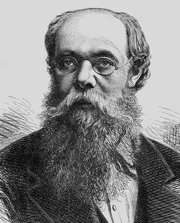

Олександр Якович Кониський належить до того типу письменників – і водночас громадських діячів, які, не претендуючи на перші місця на "п’єдесталі" літератури певного періоду, зробили для неї наполегливою буденною працею більше, аніж хто інший.
Чи не найточніше життєву позицію Кониського характеризує його-таки вірш:
Покинь високії слова. Возьмись за просте діло: У нас робітників нема, А ватажки нам надоїли. Кониський і був тим робітником на ниві українського письменства та громадського життя, без якого важко уявити другу половину ХІХ століття. І.Франко писав, що "Се був чоловік,— говорить далі І. Франко,— немов створений для перехідної доби, для заповнення ріжних люк, "для заселення пустелі, як каже Гейне". Спробуємо перелічити головні напрямки діяльності Кониського: різностороння письменницька діяльність (різножанрова поезія та проза, белетристика); публіцистика; переклади з російської, англійської, німецької мов; літературна критика; біограф Т.Шевченка; автор статей із суспільних наук. За широтою діяльності з Кониським можуть зрівнятися хіба П.Куліш, Б.Грінченко та І.Франко (порівняння з останнім буде найдоречнішим, беручи до уваги і суспільствознавчі праці). Життєвий шлях О.Кониського. Олександр Якович Кониський народився 18 серпня 1836 р. на хуторі Переходівці Борзенського повіту Чернігівської губернії в зубожілій дворянській родині Початки грамоти він дістав від матері та діда — старосвітського священика; один рік відвідував дворянську повітову школу в Ніжині; потім як син неімущих дворян був влаштований на прожиття в сирітський дім у Чернігові та навчання в тамтешній гімназії, з якої на тринадцятому році був виключений за писання українських віршів. Повернувшись до Ніжина, Кониський продовжував учитися в дворянській повітовій школі Спроба здобути вишу освіту в Ніжинському ліцеї закінчилася для нього невдачею. На перешкоді стали матеріальні нестатки та хвороба очей. У 1853—1854 рр., як засвідчує автобіографічна повість "Молодий вік Максима Одинця" (1900), Кониський здійснив подорож по Чернігівській та Полтавській губерніях, під час якої знайомився з життям і побутом різних суспільних верств — покріпачених селян, "вільних" козаків, старосвітських священиків, чиновників, полупанків, великих земле— і душевласників-дворян, був свідком моторошних розправ панів-кріпосників над селянами, читав заборонені твори Шевченка та іншу підцензурну літературу. За підозрою в належності до нелегальної політичної організації в 1863 р. Кониського заарештували й вислали спочатку до Вологди, а потім до Тотьми. Та, повернувшись із заслання, Кониський, проживаючи під постійним поліцейським наглядом у Єлисаветграді, Бобринці, Катеринославі, не опускає рук, залишається вірним ідеї національного відродження свого народу. У бурхливі 60-ті роки, ознаменовані небувалим суспільним піднесенням, Кониський на повну силу віддається громадській діяльності, яка, проте, не виходила за межі просвітительства. У 1872 р. Кониському дозволили переїхати до Києва. Він енергійно налагоджує контакти з редакціями львівських журналів та народовськими культурно-освітніми організаціями. Особливо складною, насиченою різними подіями була в житті Кониського друга половина 80-х років. Поліція стежила за кожним його кроком. Коли письменник повертався зі Львова до Києва, на прикордонній станції Волочиськ 8 липня 1885 р. жандарми затримали його, принизливо обшукали, відібрали видані в Галичині книжки та рукописи.Цей арешт, а згодом безперервні виклики в Києві до поліції, хуліганські звинувачення зі сторінок шовіністичного "Киевлянина" упродовж двох років травмували душу, негативно позначалися на творчій праці. Кониський змушений був друкувати (навіть у Галичині) свої твори під численними псевдонімами, щоб хоч якоюсь мірою унеможливити поліцейські переслідування. До самої смерті в 1900 році Кониський послідовно й самовіддано робив усе що міг для визволення українського народу, для його культурного розвитку. О.Кониський – письменник. "В потребі умів бути і новелістом, і повістярем, і драматиком, і поетом, і публіцистом, і сатириком", — так охарактеризував письменницьку діяльність О.Кониського І.Франко. Його творчість викликала неоднозначні оцінки: якщо С.Єфремов пише, що "як поет, відзначається Кониський прозорою думкою й легким та чистим віршем", то М.Драгоманов відносив його до епігонів Шевченка. До визначення особливостей і міри таланту Кониського, а водночас і його місця в історії української літератури, зокрема прози, найоб'єктивніше підійшов І. Франко. Оглядаючи українську прозу 70—90-х років, виділяючи за силою таланту Нечуя-Левицького та Панаса Мирного, І. Франко писак "Обік сих двох письменників з великим епічним талантом висунувся в тих часах наперед, особливо в Галичині, Олександер Кониський. Талант без порівняння менший від обох попередніх, не глибокий, але незвичайно рухливий і ріжносторонній, він мав у Галичині далеко більше впливу від обох попередніх письменників... Якщо галицькі українці не втратили цілком інтересу до власного письменства..., то тільки завдяки продукції на Україні, завдяки тамошнім авторам, як Нечуй-Левицький, Панас Мирний, О.Кониський..." З першими прозовими творами Кониський виступив на початку 60-х років, майже на десять років раніше, ніж І. Нечуй-Левицький і Панас Мирний. У деяких істориків літератури склалася думка, що ранній Кониський писав оповідання й нариси в асоціальному, суто етнографічно-побутовому плані, поповнював своїми творами такі популярні види "основ'янської" прози, як "Людська пам'ять про старовину" та "З народних уст". Та є в раннього Кониського і такі твори, які мають яскравий антикріпосницький характер, і своїм змістом, і своїми художньо-стильовими особливостями йдуть у фарватері реалістичної, гостро соціальної прози Марка Вовчка. Це передусім написані російською мовою нарис "Беглые" та оповідання "Пьяница". Кріпосництво зумовило трагедію і в родині безіменного оповідача з твору "Панська воля" (у цензурованих виданнях — "Старці"). Головний герой оповідання — син кріпака одружився з вільною козачкою Ганнусею, сплатив викуп, але став жертвою обману, замість "вольної" одержав фальшивий папір, лишився в панській кабалі, втратив дружину, синів, повністю розорився, став бездомним жебраком. Це реалістичне, сповнене глибокого співчуття до жертв панської сваволі оповідання має ряд таких сюжетних ситуацій, які при всій своїй оригінальності все ж нагадують відповідні епізоди в антикріпосницьких оповіданнях Марка Вовчка "Викуп" і "Козачка". В плані вирішення спільної теми оповідання "Старці" Кониського можна також порівняти з відомим оповіданням "Старці" Д. Мордовця. Серед творів, у яких Кониський викривав і засуджував кріпацтво, доводив, що цей суспільний лад є антигуманним, таким, що позбавляє людину її природних прав, особливо вдалим є етюд "Протестант" (у першодруку: "Дмитро Книш"). Кращі твори раннього Кониського близькі до творів Марка Вовчка тематикою, антикріпосницьким спрямуванням, певною спорідненістю стилістичних прийомів. Як і Марко Вовчок, Кониський виявляє себе майстром короткого епічного жанру, часто вдається до використання оповідної манери викладу, надає можливість самим героям — представникам народної маси — висловитися про своє гірке життя, систему образів і лексику щедро черпає з ресурсів усно-розмовної народної мови, фольклорних джерел. Водночас не можна не помітити і оригінальності Кониського, своєрідності його стильової манери. На відміну від Марка Вовчка, яка у своїх ранніх оповіданнях немовби зливається з оповідачем, перевтілюється в нього, безпосередньо не втручається у розповідь, Кониський — натура іншого складу, енергійна, збуджена, запальна — активно виявляє своє авторське "я": то від свого імені веде розповідь ("Пьяница", "Протестант"), то виступає співбесідником героя-оповідача, то "коментатором" того, що розповідають ці герої-оповідачі ("Беглые", "Старці"). Цей нахил до виявлення авторського "я", до потреби не просто малювати явища життя і характери людей, а й давати їм власну оцінку, виповнювати об'єктивне живописання авторськими зауваженнями, ліричними відступами зближує Кониського з такими його літературними сучасниками, як М. Помяловський, М. Успенський, Ф. Решетников, О. Левітов, А. Свидницький та ін. Дещо інший характер має нарисове оповідання "Неважное мертвое тело". Це нарисове оповідання, в якому вже чуються подуви нової доби, розкриваються деякі істотні риси "героїв" первісного капіталістичного нагромадження, і за своєю новаторською темою, і за своєю гостросюжетною, "вигадливою" побудовою, зумовленою "вигадливістю" самих дійових осіб, близько стоїть до написаних у середині 60-х років нарисів і нарисових оповідань А. Свидницького, зокрема таких, як "Железннй сундук", "Попался впросак" та ін. Все ж реалізмові цього нарисового оповідання шкодить розв'язка за принципом: "всегда наказан был порок". У раннього Кониського є також твори, присвячені відображенню життя української інтелігенції: оповідання "Пропащі люди" та "Перед світом". Спробу дати образи "людей нового часу" робить Кониський у другому творі. Головними персонажами тут є дочка дрібномаєткового панка Климовського Маруся та син селянина-чумака лікар Опанас Світайло. Перейнявшись ідеями просвітительства, характерними для значної частини української інтелігенції 60-х років, вони виявляють бажання працювати на користь народу, відкривають школу для селянських дітей, навчають їх грамоти. В цілому оповідання "Перед світом" Кониському не вдалося. Ще Ом. Огоновський відніс його до тих творів письменника, які "не можуть зватись "вдовольняючими", слушно вказав на наявність у ньому "неімовірних ситуацій". Пробує свої сили Кониський і у великій прозі. В кінці 60-х років був написаний роман "Не даруй золотом, та не бий молотом", який 1871 р. під час чергового обшуку забрала поліція і він безслідно зник. У 1873 р. письменник розпочав працю над повістю-хронікою "Семен Жук і його родичі", дві частини її з'явилися 1875 р. в народовському журналі "Правда". Свого часу І. Франко з-поміж інших творів, які в 70-х роках друкувалися на сторінках народовської "Правди", виділив повість-хроніку Кониського "Семен Жук і його родичі", назвав її "найзамітнішою", хоч і "недокінченою пробою представити інтелігента-українофіла як тип "нового чоловіка". Помітне місце в творчому доробку Кониського займає соціальна повість "Юрій Горовенко", яка окремим виданням з'явилася 1885 р.